Fold the blue towel
Fold the near half over the far half.
Technical paper
From recorded robot demonstrations to a pool of training environments.


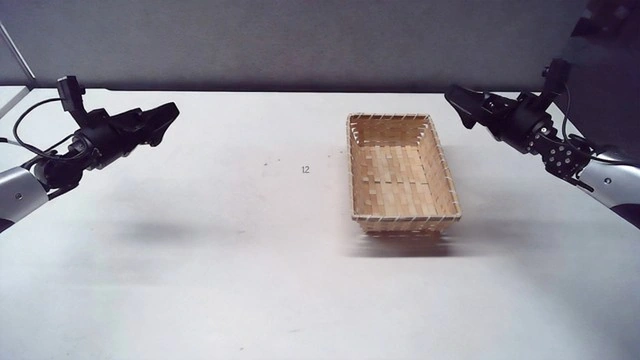


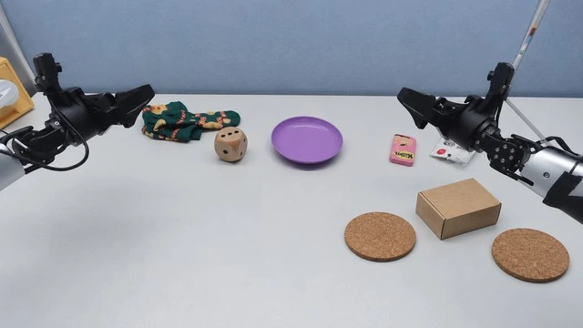


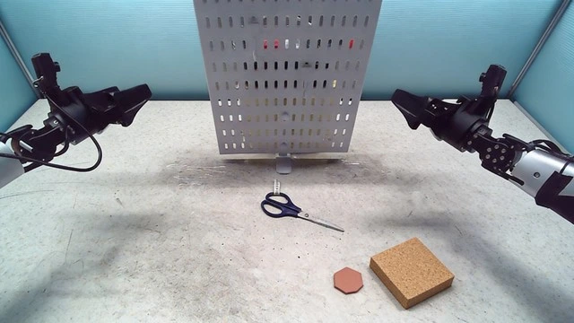
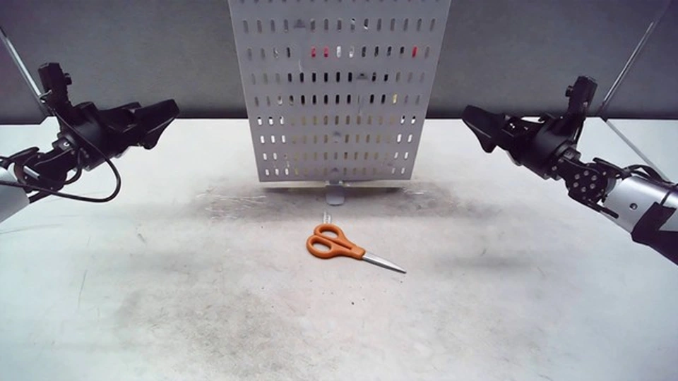
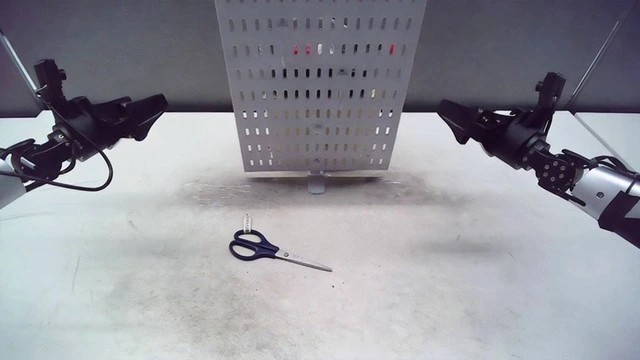
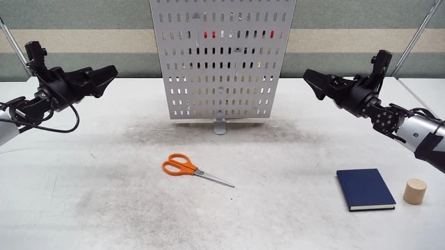

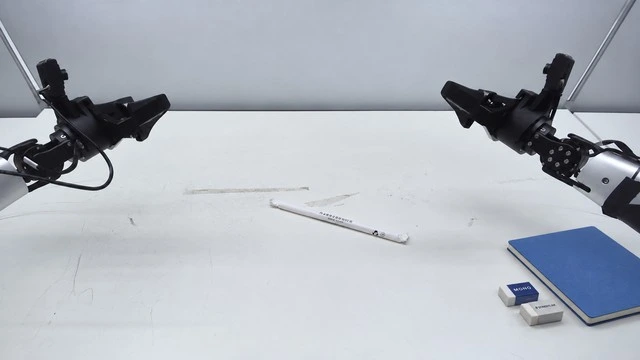


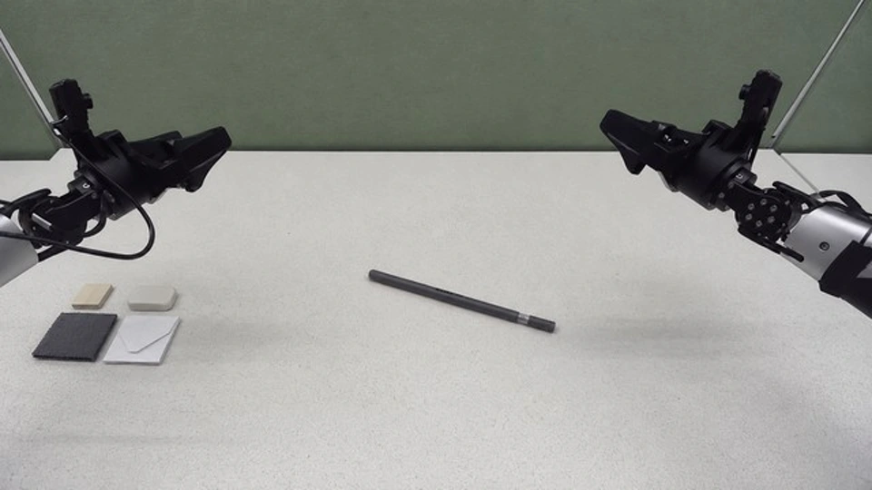
Each filmstrip follows one recorded robot trajectory. The selected examples show how the agent writes instructions and success rubrics and edits scenes for a shared environment pool.
Fine-tune Omni on three sources of manipulation data, then predict robot observations autoregressively.
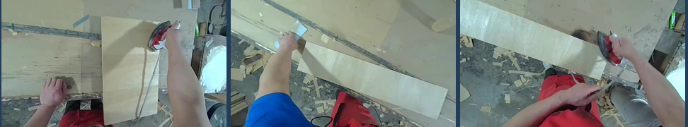
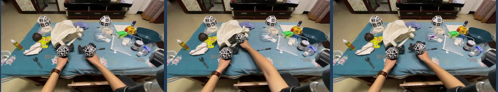

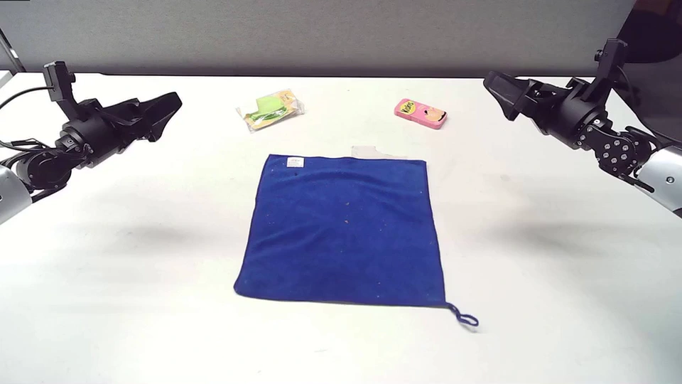

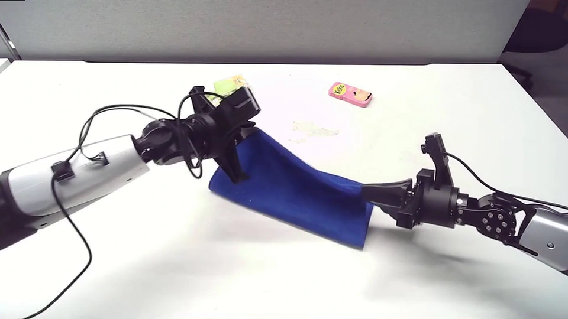
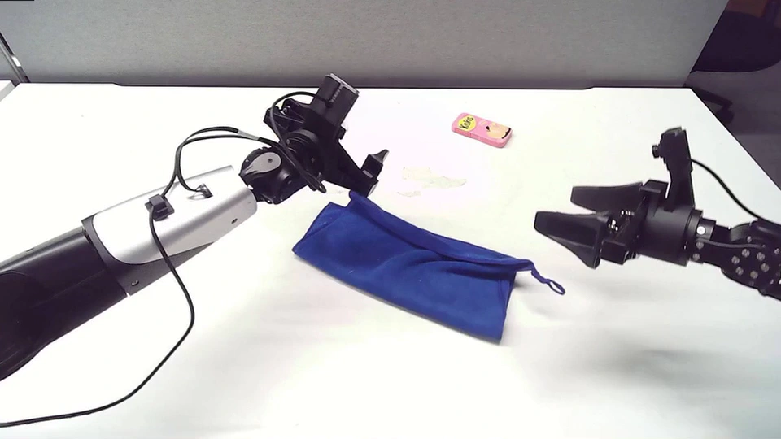
Return to policy and append to history
Next observation ô₁A successful trial from the 242-task real-robot evaluation illustrates the loop. The world model predicts all three camera views jointly.
Sample environments, roll out the policy in the world model, and learn from rubric rewards.
Task instructions and initial scenes
Current policy ↔ frozen world model
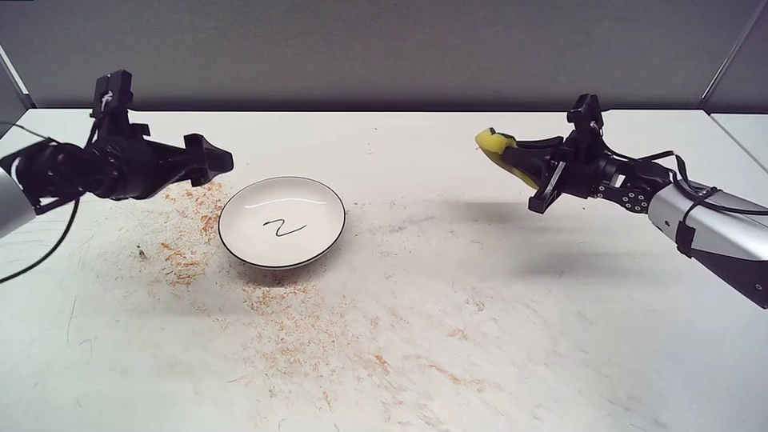
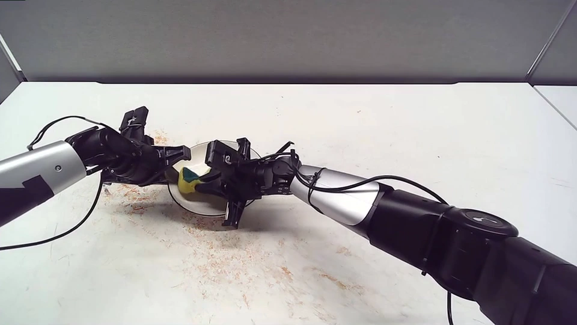
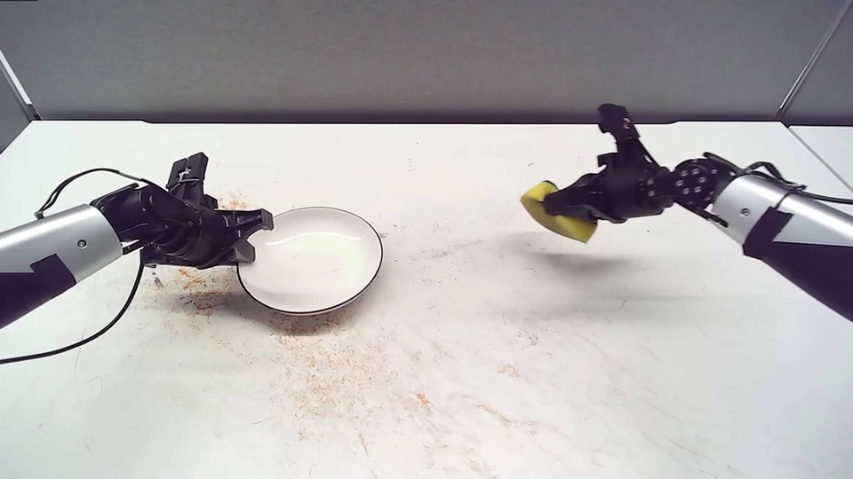


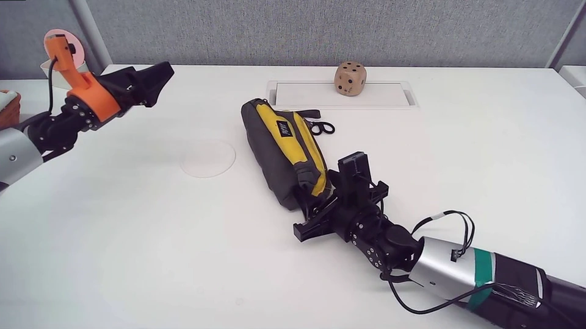

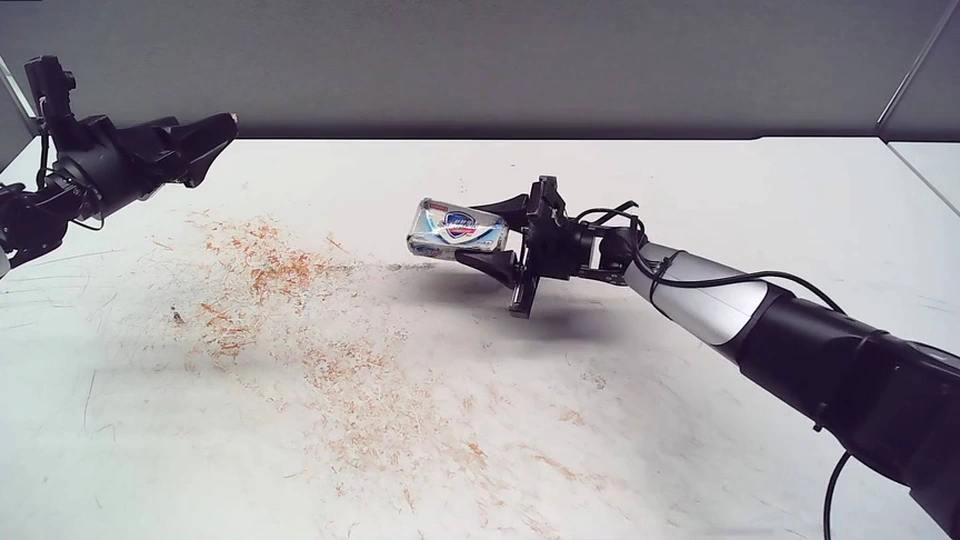
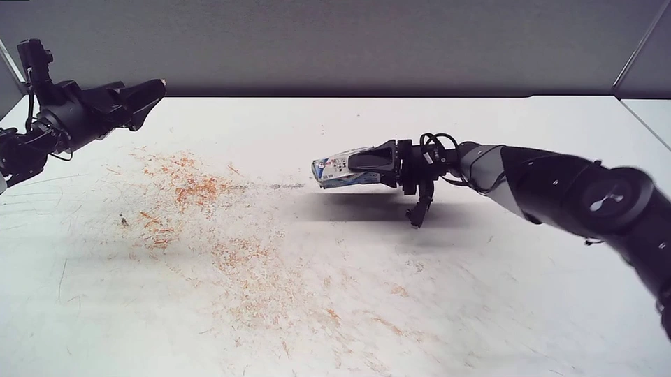
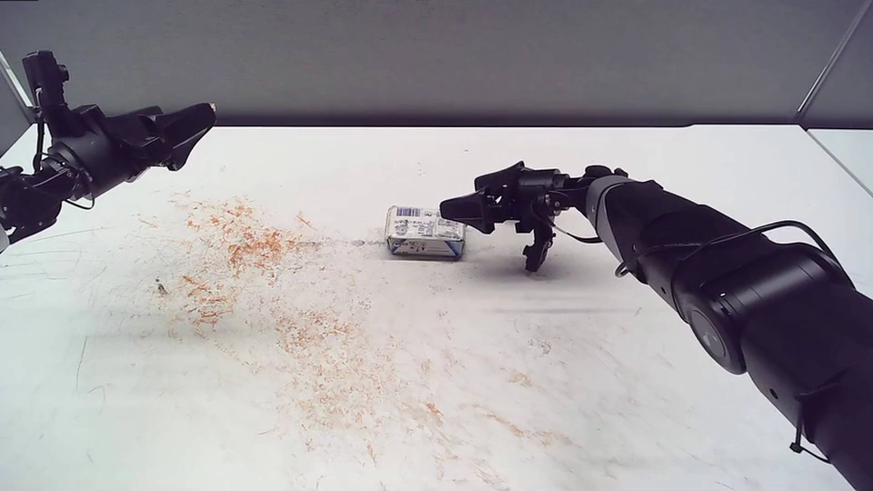
VLM checks the success rubric
Executed action tokens
Successful trials from the 242-task real-robot evaluation illustrate the rollout stage. PPO training collects its trajectories in the frozen world model.
 Enlarge figure
Enlarge figure
Scaling results
From 38.02% before RL to 62.23% at the largest scale. Each policy faces the same 242 unseen real-robot tasks, with five trials per task.
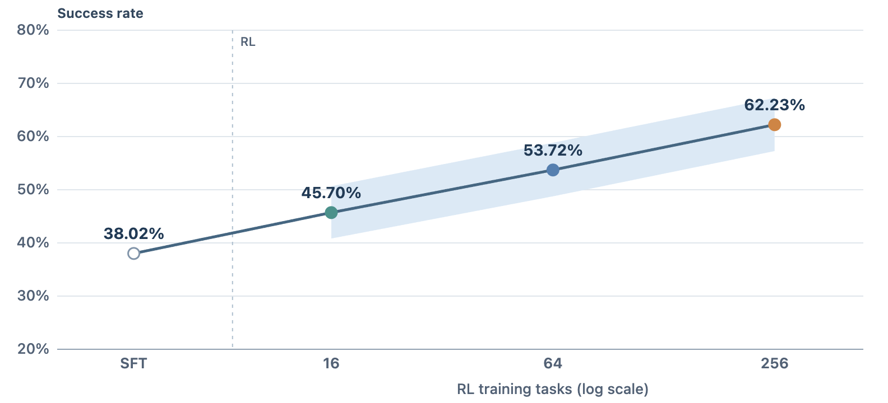
Training task count and rollout budget scale together. The 16-, 64-, and 256-task pools use 256, 1,024, and 4,096 rollouts per training round, respectively.
Real-robot evaluation
Five matched instructions, each shown as two independent autonomous trials at their recorded speed. Both sides use the head camera.
Fold the near half over the far half.
Hold the plate with the left gripper and wipe with the right.
Move it to the front-left of the coaster.
Align it with the table edge, prongs toward the bananas.
Turn the printed box over with the right gripper.
Agentic experiment
GPT-Astra chooses a manipulation, the RL-trained policy executes it, and the planner uses the returned observations to continue, retry or revise.

complete trials with GPT-Astra and the RL-trained policy. The same planner with the pre-RL policy completed 0 of 20.
ByteDance Seed · November 2026
@techreport{zhang2026scaling,
title = {Scaling Reinforcement Learning in World Models for Generalist Embodied Agents},
author = {Zhilong Zhang and Yihao Sun and Longfei Li and Hao Luo and
Guanghao Li and Heyuan Yao and Yucheng Wang and Haiqin Cui and
Juncheng Mu and Chengyu Bai and Youliang Zhang and Chenxiao Zhang and
Junpeng Ma and Yang Yu and Ceyuan Yang and Qian Wang},
institution = {ByteDance Seed},
year = {2026},
month = nov
}